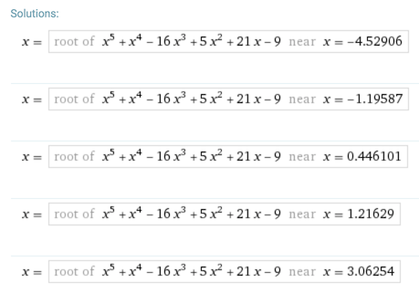
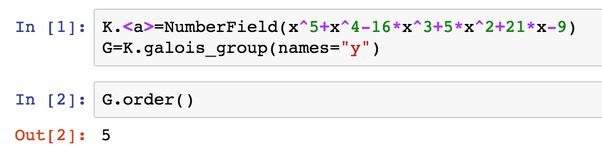
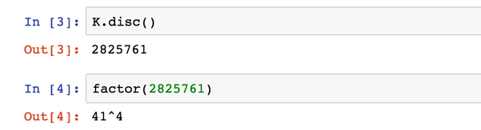
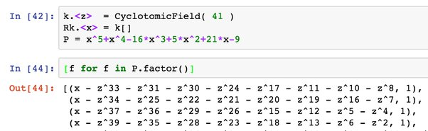
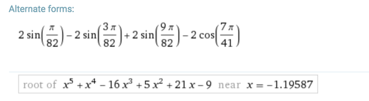

How do I solve the polynomial , with no approximation?
Oh man, someone hand-crafted this polynomial VERY carefully! Where did you come across this question? This seems suitable for a course in computational Galois theory…
The roots of this polynomial, very surprisingly, can actually be expressed with standard, simple expressions. Finding those expressions isn’t easy, and systems such as Wolfram|Alpha are unable to do it without assistance.

First things first: we should check if the polynomial is irreducible over \Q. If it were reducible, we would have had a much easier task ahead of us, but it’s not. The easiest way to see this, I believe, is to reduce mod 2. The polynomial x^5+x^4+x^2+x+1 is irreducible in \mathbb{F}_2, which says that our polynomial is irreducible over \Z, which means it’s also irreducible over \Q (since it’s monic).
So we have an irreducible polynomial over \Q, and we should determine its Galois group. It is either A_5, S_5 or a solvable group; in the first two cases, we’re screwed – at least if we hope for simple, radical expressions. In other cases, we’re very lucky.
We’re very lucky.
The Galois group of this polynomial is, incredibly, as simple as it could possibly be: not only is it solvable, it is abelian, and not only is it abelian, it is cyclic. Here is a quick Sage dialog:

(You can run this calculation yourself online in a Sage math cell, here). This says that the Galois group has order 5, and the only group of order 5 is the cyclic group.
Welp, if the Galois group is cyclic, the polynomial is most definitely solvable in radicals. In fact, by Kronecker-Weber, the splitting field is contained in a cyclotomic field, which in less fancy terms means that the roots are expressible using just roots of unity. But which ones?
I’m still not sure how to make Sage tell me directly, but here’s what I did instead. The discriminant of the polynomial is easy to calculate (well, easy for Sage. By hand it would have been a lot of work):

The discriminant is 41^4. (The number 41 just jumps right at you when you look at this polynomial, doesn’t it?) So I set \zeta = \exp(2\pi i/41), a 41^\text{st} root of unity, and factored the polynomial over \Q(\zeta). It factors completely!

(I’ve left one factor out since it’s kind of long and ruins the image).
Well. We have our solution, but it’s a little cumbersome. Let’s take the fourth factor in the list above:
x = \zeta^2+\zeta^6+\zeta^{13}+\zeta^{18}+\zeta^{23}+\zeta^{28}+\zeta^{35}+\zeta^{39}
Notice how the exponents can be paired up to have a sum of 41 (2 and 39, 6 and 35 and so on). Since \zeta^{41}=1, this means that
x = \zeta^2+\overline{\zeta}^2+\zeta^6+\overline{\zeta}^6+\zeta^{13}+\overline{\zeta}^{13}+\zeta^{18}+\overline{\zeta}^{18}
But
\zeta^k+\overline{\zeta}^k = \exp(2\pi i k/41)+\exp(-2\pi i k/41)=2\cos(2\pi k/41)
So, letting \alpha = 2\pi/41, here is one of the roots in the simplest of terms:
x = 2(\cos(2\alpha)+\cos(6\alpha)+\cos(13\alpha)+\cos(18\alpha))
There may be some clever logic here that still eludes me (EDIT: figured it out, see below). I mean, someone put together this algebraic number that has a nice and simple minimal polynomial – there ought to be some rhyme and reason to it, but I can’t say I see it immediately.
Oh, funny thing: if you feed this sum of exponents into Wolfram|Alpha, it does recognize our polynomial as the minimal polynomial! It’s not completely useless after all :) But it couldn’t figure it out directly from the polynomial – we had to bring in some knowledge of Galois theory.

Anyway, we’ve just displayed one root of this polynomial in very simple terms, and the other four roots have similar expressions. Very nice problem, if you have Sage handy (or some other CAS). I don’t know how anyone is expected to solve this by hand though!
EDIT: Ok, progress. I understand where those exponents are coming from.
The order of 3 mod 41 is 8, meaning 3^8 \equiv 1 \pmod{41} is the smallest power of 3 congruent to 1 mod 41. So there’s a subgroup T=\langle 3\rangle generated by 3 mod 41, and it has 8 elements and 5 cosets (including itself).
The five roots of the polynomial P(x)=x^5+x^4-16x^3+5x^2+21x-9 are simply the sums \sum_{i \in C} \zeta^i when C is any one of those cosets. For example, the number \omega = \sum_{i=0}^7 \zeta^{3^i} is a root of P, corresponding to the subgroup T itself.
I think this is an instance of a method devised by Kummer to generate cyclic, and more generally abelian, extensions.